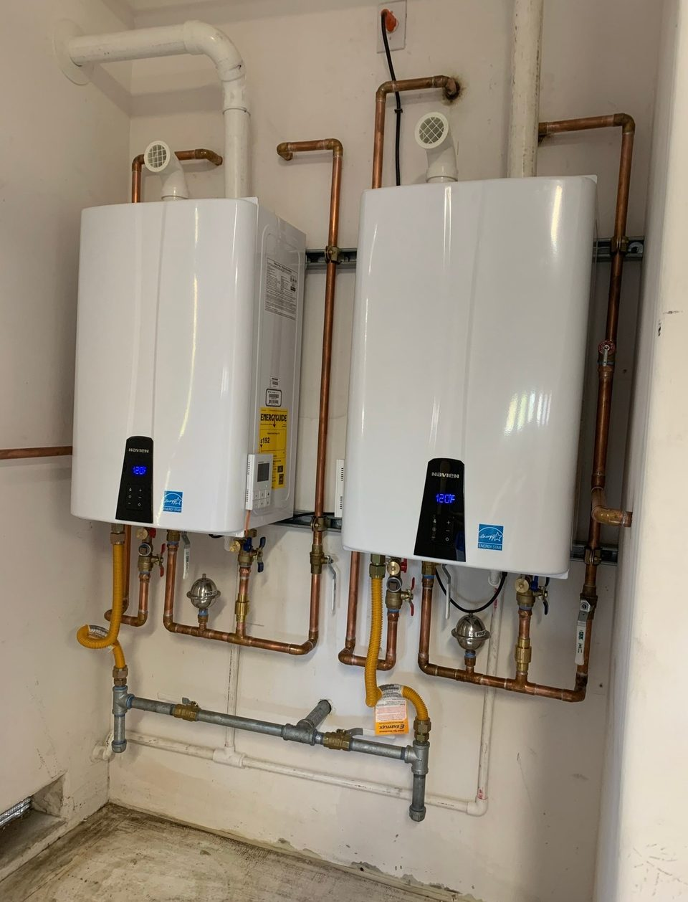
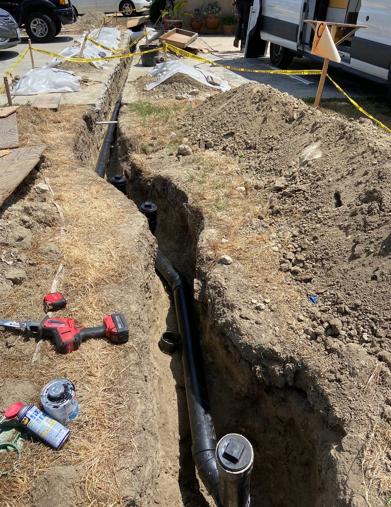
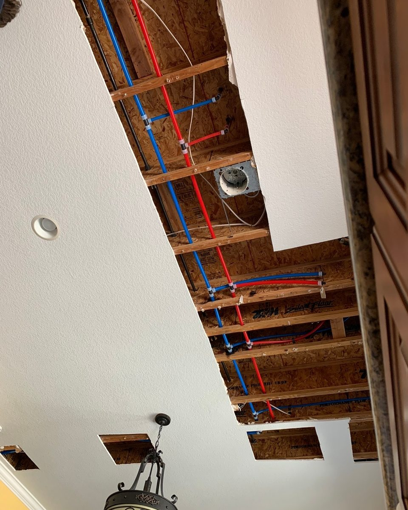
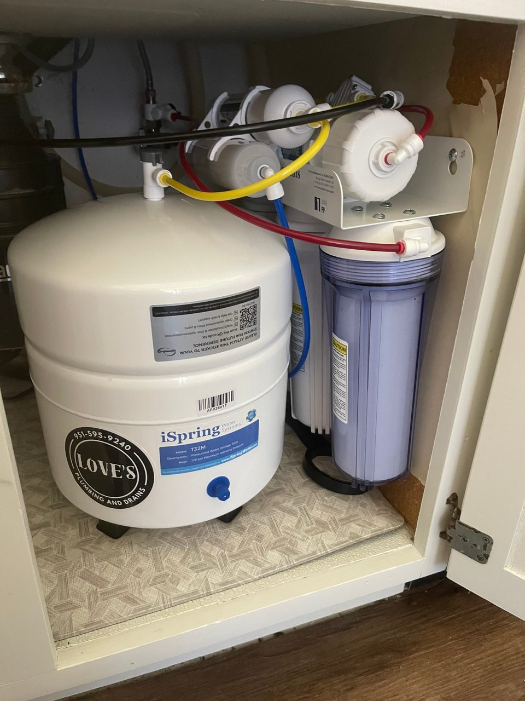
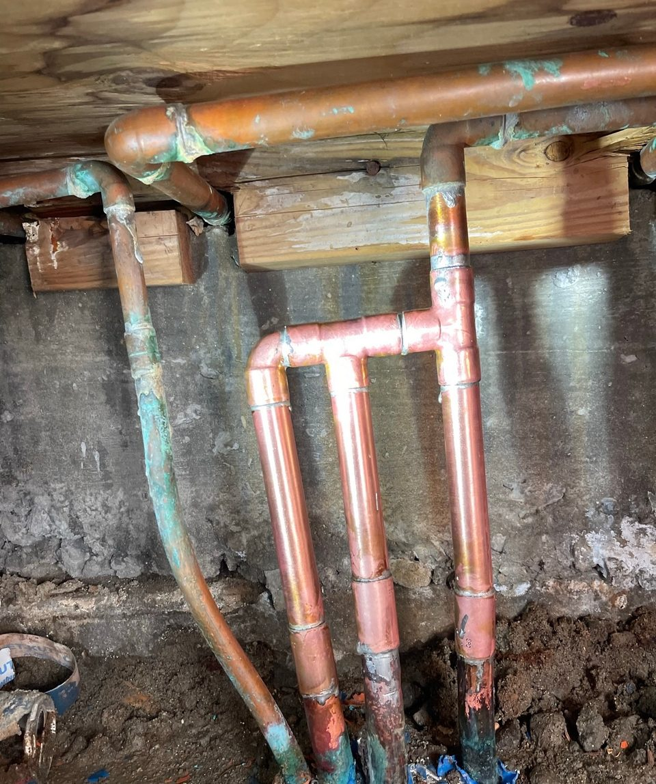

Plumbing, sewer and drain repair in Riverside, San Diego and Orange County
Water heaters, sewer and drain lines, and whole-house repipes. Owner-operated, and available 24 hours a day when something gives out.
Licensed, Bonded & Insured · CSLB #1138309
- 24/7 Emergency
- Licensed & Insured
- 10+ Years Experience
- Riverside
- San Diego
- Orange County
Four things, done properly.

Water Heaters
Tankless installation, replacement, and repair.

Sewer & Drain Repair
Line replacement, cleanouts, trenching, camera inspection.

Whole-House Repipes
PEX and copper.

Additional Services
Water filtration and softeners, reverse osmosis, gas lines, fixture installation and repair.
Real jobs, real sites.
Every photo on this site is work Anthony Love did himself.
Straight answers, and the work done right the first time.
Love’s Plumbing and Drains is owned and operated by Anthony Love — more than ten years in the trade, two years running his own shop.
That means no upselling, and no disappearing halfway through a job. You deal with Anthony directly.

Frequently asked.
Riverside, San Diego, and Orange County, plus surrounding areas.
Yes. Emergency service is available 24 hours a day.
Yes — licensed, bonded, and insured. CSLB License #1138309.
Four main areas: water heaters, including tankless installation, replacement and repair; sewer and drain repair, including line replacement, cleanouts, trenching and camera inspection; whole-house repipes in PEX and copper; and additional work such as water filtration and softeners, reverse osmosis, gas lines, and fixture installation and repair.
Shut off the main water valve to the house, then call (951) 595-9240. If the leak is near anything electrical, stay clear of it and call from a safe spot.
Call or text (951) 595-9240, any time.
Call or text and talk to Anthony directly.
No call center, no dispatcher — the person who answers is the person doing the work.
(951) 595-9240Licensed, Bonded & Insured · CSLB #1138309